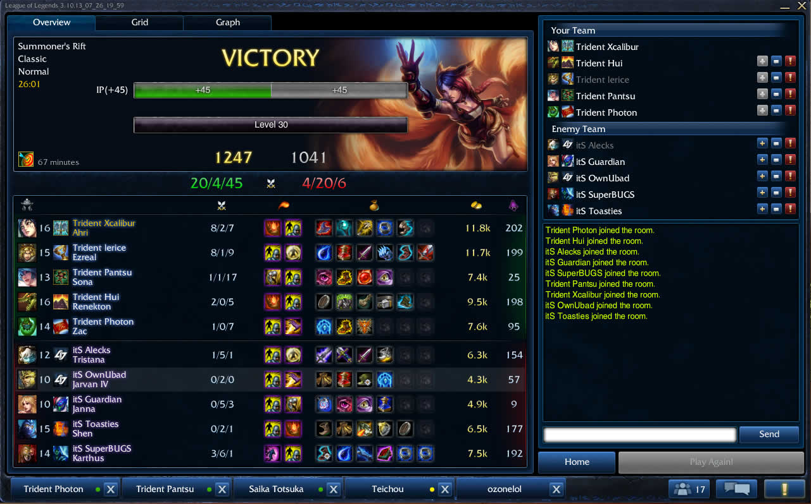
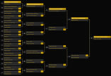
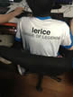
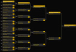
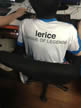

A screenshot of one of my teams best victories (dat KDA) against another Australian team in a local tournament.
This website is best viewed in a maximized browser.
SKT T1 K's crushing clean sweep victory over Royal Club in the Season 3 League of Legends World Championships.
I go by the name of lerice playing on Oceania's Summoners Rift, after I left my past alias of LovelyNuts behind when migrating from North America.
I've been an active player ever since the start of season 1, with so many great memories from my first pentakill with Master Yi, to playing countless hours of ranked 5's
throughout the night, to my personal greatest achievement, achieving Diamond in solo queue earlier last year. Me and a couple of my closest friends were so dedicated and enjoyed the game so
much as to even having a brief stint in a sponspored team (although that didn't last long), as well as placing top 16 in the Oceanic Season 3 online tournament. We were
literally 2 wins away from competing at PAX Melbourne but ended up being blown away by our opposition.
I achieved gold in Season 1 and 2 (forever flaunting my gold season 1 summoner icon!), and finally broke into platinum near the start of Season 3 after being stuck at
1800 elo for a long period. Following the grand opening of Oceanic servers in 2013, I was able to climb through the (arguably easier) competition and achieve
Diamond during late Season 3. Although I may have slowed down my playing pace as of recently (as time allows me), I am nearing ever so closely to my 1000th normal game
victory, a statistic that I may not take the most pride but will forever be mine.
Please take a look at some of the highlights of my league experience (too cheesey to call it a career...):
 



Korea's dominating all-star team in 2013. With the likes of Faker, Flame, Bengi, Piglet and more to possibly take over in 2014, who can stop them?
Alliance trouncing out Na'Vi in a nail-biting game 5 victory to win The International 3. $1,000,000 dollar Dream Coil anybody?
Pydoyks beating his personal best Any% time and reclaiming the world record by completing The Legend of Zelda: Ocarina of Time in 19:05.
Korea's one-sided tie-breaker win over Taiwan in the osu! World Cup 2013 after Taiwan clinched game 10 to force the decider.
This was the scene at the sold-out Staples Centre at the Season 3 League of Legends World Championships. With 32 million people tuning in to watch Season 3 live, what more could Season 4 offer?
With League of Legends getting bigger than ever and continuing to grow, right now is the time for me to join Riot and help League continue to go in its current direction. If I do
get selected for the internship position, I am more determined then ever to make my impact within Riot and contribute to the Web Tech team with my own developments -
something like helping to create a seasonal event page just like 'The Harrowing' last year, but even more amazing!
I hope you have enjoyed reading through my cover letter anywhere near as much as I enjoyed creating it. Finally I have left you with a few easter eggs
hidden throughout this page (there are seven in total - one is where one may not see) - as well as the mystery of the red letters in my titles! Happy sleuthing and I look forward
to the chance to hear from you :)
Sincerely yours,
Eric Tan
Each time you resize your browser window, kittens die. Please think of the kittens (or refresh to fix the page). Hide
A screenshot of one of my teams best victories (dat KDA) against another Australian team in a local tournament.
2-0 up in my promotion series to Platinum in early Season 3. I won the next game to win the series :D
My self-proclaimed godly Singed stats, the champion whom has carried me through countless Solo Queue games.
The all-gratifying cinematic when promoting to Diamond. My all time most memorable League moment.